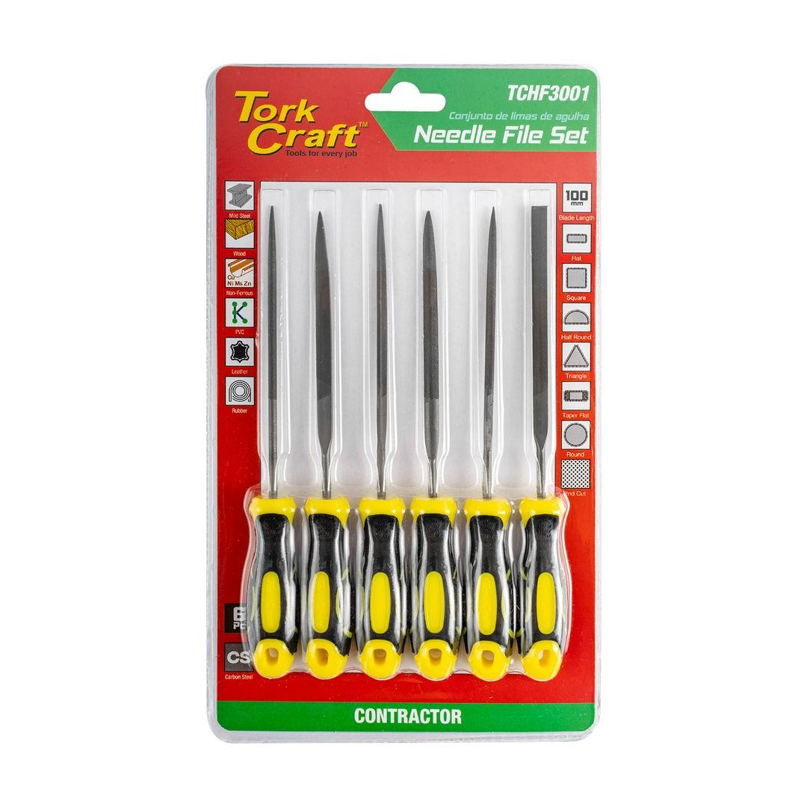
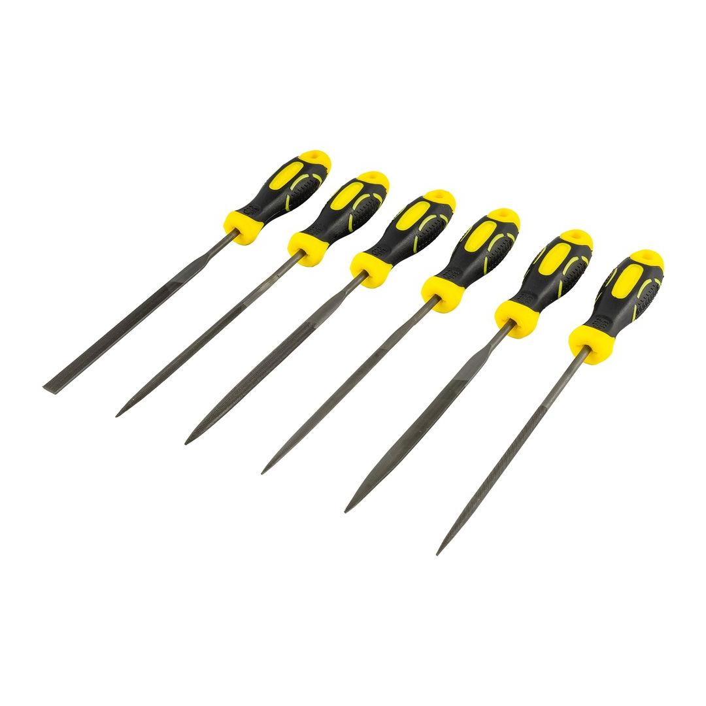

TCHF3001


File length (including handle): 160mm
Blade length: 100mm
File diameter: 3.0mm
Steel grit (cut): 2nd cut
This 6-piece needle file set includes a variety of file shapes for precision work such as jewellery making, model building, tool sharpening, and general DIY. Each file is manufactured from durable carbon steel, hardened and tempered for longevity. The ergonomic handle features a plastic and rubber grip for comfort during extended use. Supplied in a blister pack for easy storage and display.